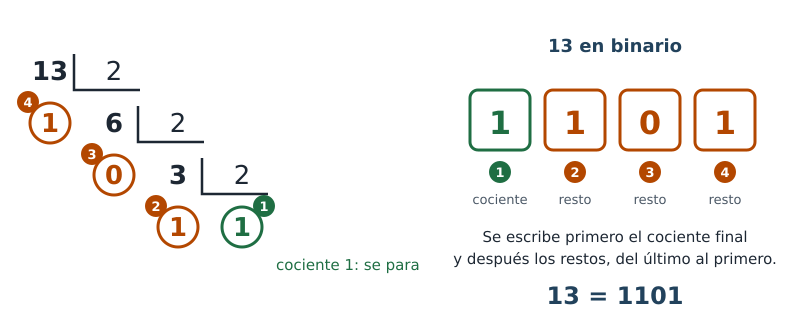

Un ordenador o un móvil solo trabajan con dos estados, 0 y 1. Entonces, ¿cómo guardan un número como 13? La respuesta es juntar varios 0 y 1 en fila, igual que juntamos cifras para escribir números grandes.
El bit y la base
Un bit es una cifra que solo puede ser 0 o 1. El sistema binario es la forma de escribir números usando solo bits.
La base de un sistema de numeración es el número de cifras distintas que usa:
- El sistema decimal, el que usas siempre, tiene base 10: diez cifras, del 0 al 9.
- El sistema binario tiene base 2: dos cifras, el 0 y el 1.
El valor posicional: potencias de 10 y potencias de 2
En el número 352, el 3 vale 300 porque está en la posición de las centenas. Lo que vale una cifra según dónde está es su valor posicional. En decimal, cada posición vale 10 veces la de su derecha: son las potencias de 10. En binario, cada posición vale 2 veces la de su derecha: son las potencias de 2.
Recuerda: una potencia es una multiplicación repetida. 103 = 10 · 10 · 10 = 1000 y 23 = 2 · 2 · 2 = 8. Cualquier número elevado a 0 vale 1.
| Posición | 4.ª | 3.ª | 2.ª | 1.ª |
|---|---|---|---|---|
| Decimal (base 10) | 103 = 1000 | 102 = 100 | 101 = 10 | 100 = 1 |
| Binario (base 2) | 23 = 8 | 22 = 4 | 21 = 2 | 20 = 1 |
Si hacen falta más posiciones, se sigue igual: en binario, la 5.ª vale 24 = 16, la 6.ª vale 32, la 7.ª, 64, y la 8.ª, 128.
Multiplicar por la base es añadir un cero
En decimal, multiplicar por 10 es añadir un 0 a la derecha: 35 · 10 = 350. Todas las cifras se desplazan una posición y pasan a valer 10 veces más.
En binario pasa lo mismo con el 2: 101 vale 5, y 1010 vale 10. Añadir un 0 a la derecha multiplica por 2; añadir dos ceros, por 4; tres ceros, por 8.
Por eso, para un ordenador multiplicar por 2, 4, 8, 16, 32, 64… es tan fácil como para ti multiplicar por 10, 100, 1000 o 10 000.
De binario a decimal, paso a paso: 1101
Se multiplica cada bit por lo que vale su posición y se suman los resultados. Un bit a 0 no aporta nada.
| 4.ª posición | 3.ª posición | 2.ª posición | 1.ª posición | |
|---|---|---|---|---|
| Bit | 1 | 1 | 0 | 1 |
| Vale | 23 = 8 | 22 = 4 | 21 = 2 | 20 = 1 |
| Aporta | 1 · 8 = 8 | 1 · 4 = 4 | 0 · 2 = 0 | 1 · 1 = 1 |
Suma de lo que aporta cada posición: 8 + 4 + 0 + 1 = 13.
De decimal a binario, paso a paso: 13
El método de las divisiones sucesivas:
- Divide el número entre 2. Apunta el cociente y el resto. El resto siempre es 0 o 1.
- Divide ese cociente otra vez entre 2, y apunta el nuevo cociente y el nuevo resto.
- Repite hasta que el cociente sea 1.
- Escribe el número binario: primero ese último cociente (el 1) y después los restos en orden inverso a como los has obtenido: del último al primero.
Para el 13:
- 13 : 2 = 6, resto 1 (porque 13 = 2 · 6 + 1)
- 6 : 2 = 3, resto 0 (porque 6 = 2 · 3 + 0)
- 3 : 2 = 1, resto 1 (porque 3 = 2 · 1 + 1)
El cociente ya es 1: se para. Se escribe ese 1 y, detrás, los restos de abajo arriba (1, 0, 1): 13 = 1101.

Comprobación: 1101 = 8 + 4 + 0 + 1 = 13. ✔ Comprueba siempre así tus conversiones.
Los números 0 y 1 no hace falta dividirlos: en binario se escriben igual, 0 y 1.
Actividad guiada
- Pasa a decimal, multiplicando cada bit por lo que vale su posición: 0110 y 1001. Comprueba con el conversor.
- Pasa a binario con divisiones sucesivas: 6 y 14.
Comprueba tu respuesta
- 0110 = 0 · 8 + 1 · 4 + 1 · 2 + 0 · 1 = 4 + 2 = 6.
1001 = 1 · 8 + 0 · 4 + 0 · 2 + 1 · 1 = 8 + 1 = 9. - 6:
- 6 : 2 = 3, resto 0 (porque 6 = 2 · 3 + 0)
- 3 : 2 = 1, resto 1 (porque 3 = 2 · 1 + 1)
El cociente ya es 1: se para. Se escribe ese 1 y, detrás, los restos de abajo arriba (1, 0): 6 = 110.
Con cuatro bits se escribe 0110 (un 0 a la izquierda no cambia el valor).
14:- 14 : 2 = 7, resto 0 (porque 14 = 2 · 7 + 0)
- 7 : 2 = 3, resto 1 (porque 7 = 2 · 3 + 1)
- 3 : 2 = 1, resto 1 (porque 3 = 2 · 1 + 1)
El cociente ya es 1: se para. Se escribe ese 1 y, detrás, los restos de abajo arriba (1, 1, 0): 14 = 1110.
Número binario y estado no son lo mismo
«1011» puede ser dos cosas distintas:
- Un número binario: el once.
- Los estados de cuatro entradas: A = 1, B = 0, C = 1, D = 1. Aquí no es ningún número: dice qué entradas valen 1.
Se escriben igual, pero hay que saber en cada caso de cuál se trata.
Practica tú
Usa el conversor en modo Reto para practicar, y después resuelve sin él, escribiendo las operaciones:
- Pasa a decimal: 0011, 0101, 1100, 1111.
- Pasa a binario con divisiones sucesivas: 2, 7, 10, 15.
- ¿Cuál es el número más grande que cabe en cuatro bits? ¿Por qué?
- 11 en binario es 1011. Sin hacer cuentas, ¿cuánto vale 10110? ¿Y 101100?
Comprueba tu respuesta
- 0011 = 2 + 1 = 3; 0101 = 4 + 1 = 5; 1100 = 8 + 4 = 12; 1111 = 8 + 4 + 2 + 1 = 15.
- 2:
- 2 : 2 = 1, resto 0 (porque 2 = 2 · 1 + 0)
El cociente ya es 1: se para. Se escribe ese 1 y, detrás, los restos de abajo arriba (0): 2 = 10.
7:- 7 : 2 = 3, resto 1 (porque 7 = 2 · 3 + 1)
- 3 : 2 = 1, resto 1 (porque 3 = 2 · 1 + 1)
El cociente ya es 1: se para. Se escribe ese 1 y, detrás, los restos de abajo arriba (1, 1): 7 = 111.
10:- 10 : 2 = 5, resto 0 (porque 10 = 2 · 5 + 0)
- 5 : 2 = 2, resto 1 (porque 5 = 2 · 2 + 1)
- 2 : 2 = 1, resto 0 (porque 2 = 2 · 1 + 0)
El cociente ya es 1: se para. Se escribe ese 1 y, detrás, los restos de abajo arriba (0, 1, 0): 10 = 1010.
15:- 15 : 2 = 7, resto 1 (porque 15 = 2 · 7 + 1)
- 7 : 2 = 3, resto 1 (porque 7 = 2 · 3 + 1)
- 3 : 2 = 1, resto 1 (porque 3 = 2 · 1 + 1)
El cociente ya es 1: se para. Se escribe ese 1 y, detrás, los restos de abajo arriba (1, 1, 1): 15 = 1111.
- 15, que es 1111: todos los bits están a 1, así que se suman todas las posiciones (8 + 4 + 2 + 1). Con cuatro bits hay 16 números distintos, del 0 al 15.
- Añadir un 0 a la derecha multiplica por 2: 10110 = 11 · 2 = 22, y 101100 = 11 · 4 = 44.
Ampliación: el sistema hexadecimal (base 16)
Esta parte no es necesaria para aprobar.
Con 4 bits hay 2 · 2 · 2 · 2 = 24 = 16 combinaciones, de 0000 a 1111. El sistema hexadecimal tiene base 16: usa dieciséis cifras, del 0 al 9 y de la A a la F (A = 10, B = 11, C = 12, D = 13, E = 14, F = 15). Así, cada grupo de 4 bits se escribe exactamente con una cifra hexadecimal, sin que sobre ni falte ninguna.
| Sistema | Base | Cifras | Relación con el binario |
|---|---|---|---|
| Binario | 2 | 0 y 1 | Es el que usan los circuitos. |
| Decimal | 10 | del 0 al 9 | 10 no es potencia de 2: 3 bits dan 8 combinaciones (faltan) y 4 bits dan 16 (sobran 6). No hay correspondencia exacta. |
| Hexadecimal | 16 | del 0 al 9 y de la A a la F | 16 = 24: cada 4 bits son una cifra. Por eso se usa para escribir binarios largos de forma corta. |
| Decimal | 0 | 1 | 2 | 3 |
|---|---|---|---|---|
| Binario | 0000 | 0001 | 0010 | 0011 |
| Hexadecimal | 0 | 1 | 2 | 3 |
| Decimal | 4 | 5 | 6 | 7 |
| Binario | 0100 | 0101 | 0110 | 0111 |
| Hexadecimal | 4 | 5 | 6 | 7 |
| Decimal | 8 | 9 | 10 | 11 |
| Binario | 1000 | 1001 | 1010 | 1011 |
| Hexadecimal | 8 | 9 | A | B |
| Decimal | 12 | 13 | 14 | 15 |
| Binario | 1100 | 1101 | 1110 | 1111 |
| Hexadecimal | C | D | E | F |
Ejemplo: 1010 1111 → 1010 = A y 1111 = F → AF. Ocho bits se escriben con solo dos cifras.
Más ejercicios para practicar
Ejercicios de binario (PDF). Cada ejercicio trae su resultado debajo para que compruebes si lo has hecho bien; los marcados «Refuerzo» traen parte del trabajo hecho y los pasos señalados.